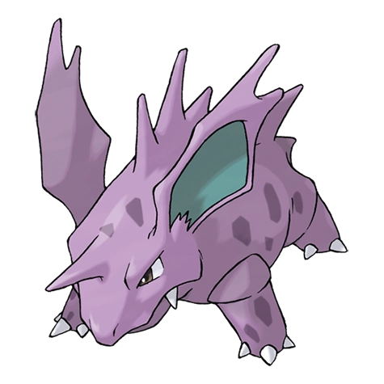
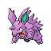
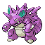

Нидорино

Nidorino — Покемон 1 поколения под номером 33 в Покедекс. Обитает он в регионе Канто и относится к Ядовитому типу. У Нидорино рог твёрже алмаза. Если он чувствует враждебное присутствие, все шипы на его спине сразу встают дыбом, и он всеми силами бросает вызов врагу.
Тип и слабости:
Ядовитый
Эволюция

# 033 Нидорино
=>

# 034 Нидокинг